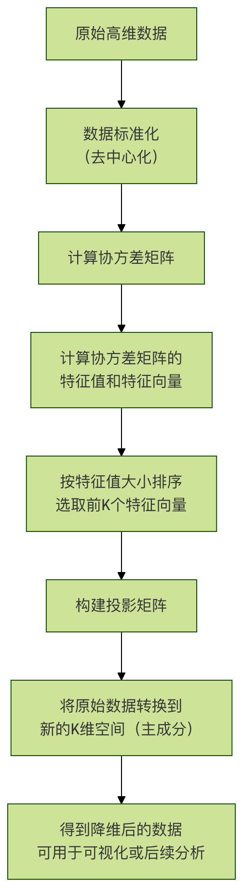

機械学習 - PCA可視化の例
想像してみてください。さまざまな物が詰まった散らかった部屋を整理しているとします。部屋のレイアウトをより明確に把握するために、正面・側面・上からなど、さまざまな角度から写真を何枚か撮るかもしれません。
主成分分析（Principal Component Analysis、略称PCA）機械学習におけるPCAもこれと似た働きをします。
PCAは強力な次元削減和可視化ツールです。データに何百、何千もの特徴量（次元）が含まれるとき、そのデータは超高次元空間の中にあるようなもので、人間は直感的に理解できません。
PCAは、データの中で最も重要な視点（すなわち主成分）を見つけ、データを最も重要な2、3の次元に投影することで、2次元または3次元の散布図を使って高次元データの構造や分布を観察できるようにしてくれます。
簡単に言うと、PCAの目的は次のとおりです。
- 次元削減：より少ない特徴量で元のデータを表現し、計算量とストレージを削減するとともに、ノイズを除去します。
- 可視化：高次元データを2次元または3次元に削減し、データ点間の関係（クラスタリングや分離の状況など）を直感的に観察できるようにします。
PCAの中心原理と処理フロー
PCAの中心的な考え方は、データの分散が最大となる方向を見つけることです。
分散が大きいほど、この方向へのデータの射影がより散らばり、含まれる情報量も多くなります。
最初に見つかった方向が第一主成分（PC1）、次にPC1と直交し、分散が2番目に大きい方向が第二主成分（PC2）となり、以下同様に続きます。
PCA処理フローチャート

フローの主要ステップの説明：
標準化：各特徴量の平均を0、標準偏差を1にし、すべての特徴量が計算時に同等の重要性を持つようにします。
共分散行列：特徴量間の相関を計算します。PCAはこの行列を分析することで、データの変化の主な方向を見つけます。
固有値と固有ベクトル：
- 固有ベクトル：これは私たちが求めている主成分の方向です。
- 固有値：対応する固有ベクトルの方向におけるデータの分散の大きさです。固有値が大きいほど、その主成分が重要になります。
主成分の選択：固有値を大きい順に並べ、上位K個の固有値に対応する固有ベクトルを選択します。Kは次元削減の目標次元です（例：可視化の場合はK=2または3）。
データ変換：選択したK個の固有ベクトルで射影行列を構成し、元のデータにこの行列を掛けると、K個の新しい主成分上の座標、すなわち次元削減後のデータが得られます。
実践例：アヤメ（Iris）データセットの可視化
ここでは定番のアヤメ（Iris）データセットを使ってPCAをデモします。このデータセットには150個のサンプルが含まれ、各サンプルは4つの特徴量（がく片の長さ、がく片の幅、花びらの長さ、花びらの幅）を持ち、3つの異なる品種に属しています。
目標は、この4次元のデータをPCAで2次元に削減し、2次元平面上にプロットして、異なる品種の花が区別できるかどうかを観察することです。
環境の準備とデータの読み込み
まず、必要なPythonライブラリがインストールされていることを確認してください。scikit-learn, matplotlib, numpy，pandas。
例
import numpy as np
import pandas as pd
import matplotlib.pyplot as plt
from sklearn import datasets
from sklearn.decomposition import PCA
from sklearn.preprocessing import StandardScaler
# 中国語フォントとグラフのスタイルを設定（任意）
plt.rcParams['font.sans-serif'] = ['SimHei'] # 中国語のラベルを正しく表示するため
plt.rcParams['axes.unicode_minus'] = False # 負の記号を正しく表示するため
# アヤメデータセットを読み込み
iris = datasets.load_iris()
X = iris.data # 特徴量データ、形状は (150, 4)
y = iris.target # ターゲットラベル（品種）、形状は (150,)
target_names = iris.target_names # 品種名：['setosa', 'versicolor', 'virginica']
print(f"データセットの形状: {X.shape}")
print(f"特徴量名: {iris.feature_names}")
print(f"ターゲットのカテゴリ: {target_names}")
出力：
数据集形状: (150, 4) 特征名称: ['sepal length (cm)', 'sepal width (cm)', 'petal length (cm)', 'petal width (cm)'] 目标类别: ['setosa' 'versicolor' 'virginica']
データの標準化
PCAを適用する前に、データを標準化することは極めて重要なステップです。
PCAは特徴量のスケールに非常に敏感だからです。ある特徴量の数値範囲（例えば、花びらの長さがセンチメートル単位で1〜10の間）が別の特徴量（例えば、がく片の幅がミリメートル単位で0.1〜1の間）よりもはるかに大きい場合、数値範囲の大きい特徴量が主成分の方向を支配してしまいますが、これは通常望ましくありません。
例
scaler = StandardScaler()
X_scaled = scaler.fit_transform(X)
print("標準化後、最初の5サンプルのデータ：")
print(X_scaled[:5])
PCAを適用した次元削減
私たちはscikit-learn 的 PCAクラスを使用します。これで、すべての数学的計算を簡単に行えます。
例
pca = PCA(n_components=2)
# 標準化したデータでPCAモデルを適合させ、データ変換を行う
X_pca = pca.fit_transform(X_scaled)
print(f"次元削減後のデータの形状: {X_pca.shape}")
print(f"最初の5サンプルのPC1とPC2上の座標:"\n{X_pca[:5]}")
# 各主成分の分散説明率を確認
print(f"主成分の分散説明率: {pca.explained_variance_ratio_}")
print(f"最初の2つの主成分の累積分散説明率: {sum(pca.explained_variance_ratio_):.4f}")
コードの解説：
n_components=2：データを2次元に削減することを指定します。
fit_transform(X_scaled)：このメソッドは一度に2つのことを行います。
fit：入力データに基づいてX_scaledPCAに必要なパラメータ（主成分の方向など）を計算します。transform：計算済みのパラメータを使って、データをX_scaled新しい2次元空間に変換します。
explained_variance_ratio_：これは非常に重要な属性です。各主成分が元のデータの分散を捕捉した割合を教えてくれます。例えば、出力が[0.73, 0.23]の場合、PC1は元のデータの73%の情報を保持し、PC2は23%を保持し、合計で96%の情報を保持していることを意味します。これにより、次元削減後の情報損失を評価できます。
可視化結果
これで2次元のデータが得られましたX_pca、散布図を使って簡単に可視化できます。
例
plt.figure(figsize=(8, 6))
# 各品種に異なる色とマーカーを設定
colors = ['navy', 'turquoise', 'darkorange']
lw = 2 # 線の太さ
# 3つの品種をループして、それぞれ描画
for color, i, target_name in zip(colors, [0, 1, 2], target_names):
plt.scatter(X_pca[y == i, 0], # 現在の品種iに属するサンプルのPC1座標を選択
X_pca[y == i, 1], # 現在の品種iに属するサンプルのPC2座標を選択
color=color, alpha=0.8, lw=lw,
label=target_name)
# グラフのタイトルと軸ラベルを追加
plt.title('アヤメデータセットのPCA2次元可視化')
plt.xlabel(f'第一主成分 (PC1) - 分散説明率: {pca.explained_variance_ratio_)
plt.ylabel(f'第二主成分 (PC2) - 分散説明率: {pca.explained_variance_ratio_)
plt.legend(loc='best', shadow=False, scatterpoints=1)
plt.grid(True, linestyle='--', alpha=0.6)
# グラフを表示
plt.tight_layout()
plt.show()
可視化結果の解釈：上記のコードを実行すると、2次元の散布図が得られます。
- X軸（PC1）：元の4つの特徴量の中で分散が最大の方向を表し、データを区別する上で最も重要な次元です。図からわかるように、PC1はうまくSetosa（ヒオウギアヤメ）品種を他の2つの品種から分離しています。
- Y軸（PC2）：PC1と直交し、分散が2番目に大きい方向を表し、追加の区別情報を提供します。さらに、Versicolor（バーシカラー） 和 とVirginica（バージニカ）を区別するのに役立ちます。、両者にはいくつかの重なりがあるものの。
- 結論：PCAにより、4次元データを2次元平面に投影することに成功し、3つの品種のクラスタリング状況を明確に観察できました。Setosaは完全に分離しましたが、VersicolorとVirginicaは2次元投影上で部分的に重なっています。これは、最初の2つの主成分（約95%の情報を保持）だけでは後者の2品種を完璧に区別するには不十分であることを示していますが、それらの主な分布傾向はすでに非常に明瞭です。
さらに深く探る：考察
主成分の数（K値）はどう選ぶ？
実際のプロジェクトでは、何次元に削減すべきか分からない場合があります。一般的な方法の1つは、以下をプロットすることです。スクリープロット（Scree Plot）、これは各主成分の分散説明率を示します。
例
pca_full = PCA()
pca_full.fit(X_scaled)
# スクリープロットを描画します
plt.figure(figsize=(8, 5))
plt.plot(range(1, len(pca_full.explained_variance_ratio_) + 1),
pca_full.explained_variance_ratio_, 'o-', linewidth=2)
plt.title('PCA分散説明率のスクリープロット')
plt.xlabel('主成分番号')
plt.ylabel('分散説明率')
plt.grid(True, linestyle='--', alpha=0.6)
plt.xticks(range(1, len(pca_full.explained_variance_ratio_) + 1))
plt.tight_layout()
plt.show()
# 累積分散説明率のプロットを描画します
plt.figure(figsize=(8, 5))
plt.plot(range(1, len(pca_full.explained_variance_ratio_) + 1),
np.cumsum(pca_full.explained_variance_ratio_), 's-', linewidth=2, color='red')
plt.title('PCA累積分散説明率')
plt.xlabel('主成分数')
plt.ylabel('累積分散説明率')
plt.axhline(y=0.95, color='gray', linestyle='--', label='95% 閾値') # よく使用される閾値
plt.legend()
plt.grid(True, linestyle='--', alpha=0.6)
plt.xticks(range(1, len(pca_full.explained_variance_ratio_) + 1))
plt.tight_layout()
plt.show()
K値はどのように選ぶか？
- エルボーポイントを見る：スクリープロット内で、分散説明率の下降傾向が急に緩やかになる点（エルボー）を探します。その後の主成分の寄与は小さくなります。
- 閾値を設定する：累積分散プロットで、累積説明率が満足できる閾値（例：95% または 99%）に達する最小のK値を選択します。アヤメデータの累積プロットから、最初の2つの主成分で95%以上の分散を説明できることがわかるため、K=2は良い選択です。
主成分の意味を理解する
さらに、主成分のローディング（Loadings）、つまり各元の特徴の主成分への寄与重みであり、主成分の実際の意味を解釈するのに役立ちます。
例
pca_components = pca.components_ # 形状は (2, 4)
# DataFrameで表示すると、より明確になります
df_components = pd.DataFrame(pca_components,
columns=iris.feature_names,
index=['PC1', 'PC2'])
print("主成分ローディング行列（固有ベクトル）：")
print(df_components)
# ヒートマップで可視化できます
import seaborn as sns
plt.figure(figsize=(8, 4))
sns.heatmap(df_components, annot=True, cmap='RdBu_r', center=0)
plt.title('主成分ローディングのヒートマップ')
plt.tight_layout()
plt.show()
ローディング行列の解釈：
- 例えばPC1、もし花弁の長さと花弁の幅に大きな正重みがあり、がく片の幅に大きな负重みがある場合、PC1は主に花弁の大きさとがく片の幅の対比という複合特徴を表している可能性があります。
- またPC2、重みのパターンが異なり、別の特徴の組み合わせを表している可能性があります。これらの重みを分析することで、抽象的な主成分に実際の生物学上またはビジネス上の意味を与えることができます。
まとめと実践演習
重要なポイントのまとめ
- PCAとは何か：教師なしの線形次元削減手法であり、データの分散が最大となる直交方向（主成分）を見つけることでデータを再表現します。
- 核心となるステップ：標準化 -> 共分散行列の計算 -> 固有値と固有ベクトルの計算 -> 主成分の選択 -> データの投影。
- 重要な概念：
- 主成分：新しい無相関の特徴軸。
- 分散説明率：各主成分の重要度を測る指標。
- ローディング（負荷量）：元の特徴と主成分を結ぶ橋渡しであり、主成分の意味を解釈するために使われます。
- 主な応用：データ可視化、ノイズと冗長性の除去、他のモデル（分類や回帰など）の前処理ステップとしてトレーニングを高速化すること。
実践演習
知識を定着させるために、次の演習に取り組んでみてください：
演習1：さまざまなデータセットを探索する試しにscikit-learnの中の他のデータセット（例えばdigits手書き数字データセットやwineワインデータセット）に対してPCA可視化を行ってみてください。次元削減後の画像が異なるカテゴリ間の区別をまだ保てるか観察してください。
例
from sklearn.datasets import load_wine
wine = load_wine()
# ... PCAの手順を繰り返す
演習2：3次元可視化アヤメデータを3次元に削減し、mpl_toolkits.mplot3dライブラリを使用して3次元散布図を描画します。次元を1つ増やすと、VersicolorとVirginicaの重なりが減るかどうか見てみましょう。
例
pca3 = PCA(n_components=3)
X_pca3 = pca3.fit_transform(X_scaled)
# ... 3Dグラフを作成して描画する
クリックしてノートを共有
<p style="font-size:14px;">ノートは本記事の内容を拡張したものである必要があります！</p><br> <p style="font-size:12px;"><a href="../tougao.html" target="_blank">記事の投稿は、ここをクリックしてください</a></p> <p style="font-size:14px;"><a href="../w3cnote/runoob-user-test-intro.html" target="_blank">登録招待コードの取得方法</a></p> <h3 class="text-muted"><i class="fa fa-info-circle" aria-hidden="true"></i> ノートを共有する前に必ず<a href=";.html" class="runoob-pop">ログイン</a>！</h3> <p><a href="../w3cnote/runoob-user-test-intro.html" target="_blank">登録招待コードの取得方法</a></p>